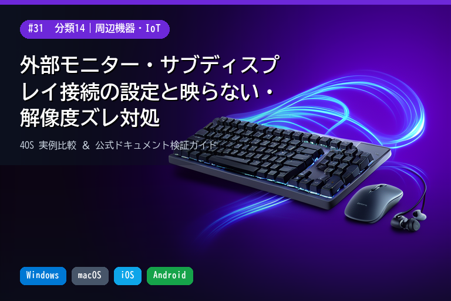

#31｜分類14: ハードウェア・周辺機器・IoT連携 2026-11-23

外部モニター・サブディスプレイ接続の設定と映らない・解像度ズレ対処｜Windows・macOS・iOS・Android
「新しい外部モニターを買ったのに、なぜか画面が映らない」「ノートPCを繋いだら文字が小さすぎて読めない」といった悩みは、マルチデバイス時代において非常に多く聞かれる問題です。
実は、Windows、macOS、iOS、Androidの4つのOSでは、映像出力の仕組みや設定の優先順位が大きく異なります。 自分のデバイスの特性を正しく理解していないと、ケーブルを買い直したり、無駄な設定に時間を費やしたりすることになりかねません。
この記事では、主要4OSにおける外部ディスプレイ接続の基本手順から、よくあるトラブルの解決策までを徹底的に解説します。この記事を読めば、どのデバイスでもスムーズなマルチモニター環境を構築できるようになります。
4OS比較早見表
| OS | 主な接続規格 | 設定の自由度 | 特徴・注意点 |
|---|---|---|---|
| Windows 11 | HDMI / DP / USB-C | 高い | 解像度・スケーリングを細かく調整可能。GPUドライバーに依存する。 |
| macOS | Thunderbolt / USB-C | 中 | Apple Siliconモデルはポート数や出力制限に注意が必要。AirPlay連携が強力。 |
| iOS (iPhone/iPad) | Lightning / USB-C | 低い | 物理アダプター必須。解像度調整はほぼモニター側（OSD）に依存する。 |
| Android | USB-C (DisplayPort Alt Mode) | 機種依存 | モデルにより映像出力自体が非対応な機種が多い。設定項目も機種ごとに異なる。 |
1. Windows 11 での実例手順
Windowsは最も自由度が高く、複数のモニターを「拡張」してデスクトップを広げるための標準機能が充実しています。
標準機能手順（公式仕様）
- 接続確認: 「スタート」＞「設定」＞「システム」＞「ディスプレイ」を開きます。
- マルチモニタの検出: 接続直後、画面右下に「この PC に複数のディスプレイが接続されています」と表示されるか確認してください。
- 拡張モード切り替え: 同じメニュー内の「マルチモニターの設定」から「これらのディスプレイを拡張して使用します」を選択します。その後、画面上の「1」「2」の番号をドラッグ＆ドロップで実際の配置に合わせて並べ替えます。
- 解像度・DPI 調整: 「設定」＞「システム」＞「ディスプレイ」へ進みます。
- スケーリング（文字サイズ）: 「拡大縮小（変更）」から推奨値（100% や 150% など）を選択します。高解像度モニターで文字が小さすぎる場合は、ここを調整するのが基本です。
標準機能の制限事項
- HDMI/DP ポート不足: PC本体にポートがない場合、USB-C ドッキングステーション（ドック）経由での接続が必要ですが、ドック側の帯域や仕様によって出力できる最大解像度が制限されることがあります。
- グラフィックドライバー依存: 標準設定で反映されない高リフレッシュレートや特殊な解像度の場合は、NVIDIAコントロールパネルやAMD Softwareなどの専用ツールでの再設定が必要になるケースがあります。
よくあるトラブルと解決法
- 「モニターが認識されない・黒画面」
- 原因: ドライバー不具合またはケーブル接続不良。
- 対策: 「デバイスマネージャー」＞「ディスプレイアダプター」でGPUを右クリックし「ドライバーの更新」を実行。改善しない場合は、グラフィックボード側のポートに直接差し替えるか、別のHDMI/DPケーブルを試してください。
- 「文字が極端に小さい・ぼやける」
- 原因: スケーリング設定とOSのDPIレイアウトの不一致。
- 対策: 「ディスプレイ」設定でスケーリングを調整する際、特定のアプリだけ表示がおかしい場合は、アプリのプロパティから「高DPI設定の変更」を行い、オーバーライド設定を確認してください。
- 「マルチモニター設定が保存されない」
- 原因: Windows Updateや高速スタートアップの影響で認識状態がリセットされることがあります。
- 対策: 設定画面で再度配置を確定させた後、PCを完全に再起動（シャットダウンではなく再起動）することで認識状態をリセットします。
2. macOS での実例手順
macOSは洗練されたインターフェースを持ちますが、Apple Silicon（M1/M2/M3チップ）以降のモデルでは接続の制約に注意が必要です。
標準機能手順（公式仕様）
- 外部モニター追加: 「システム設定」＞「ディスプレイ」を開きます。
- ThunderboltやUSB-CポートからHDMI/DVIモニターを接続します。ドック経由でもこのメニューで一括管理可能です。
- 解像度調整: 同じメニュー内でスライダーまたはプリセット（1920x1080など）を選択。「ディスプレイのレイアウト」タブで「拡張」として配置順序を変更します。
- AirPlay 接続: 「システム設定」＞「サイドバー」に AirPlay を追加し、MacBook Pro/Intel Mac から Apple TV や対応モニターへワイヤレス出力が可能です（macOS Sonoma以降）。
標準機能の制限事項
- USB-C のポート数制限: M1/M2/M3 MacBookの一部モデルは外部ディスプレイ出力に制約がある場合があり、映像出力には必ずドックまたはHDMIアダプターが必須となります。
- AirPlay の非対応機器: 一部のモニターでは遅延や画質低下が発生するため、安定した作業環境を求める場合は有線接続が強く推奨されます。
よくあるトラブルと解決法
- 「外部ディスプレイに何も映らない」
- 原因: ドックの電源不足またはThunderboltポート経由での認識失敗。
- 対策: モニターを直接Macのポートへ接続するか、ドックとMacの間にあるアダプターが「映像出力対応」であることを確認してください（データ転送専用では映りません）。
- 「解像度が自動で低く設定される」
- 原因: Apple Siliconチップの省電力モードまたはモニター側のEDID情報読み取りエラー。
- 対策: 「システム設定」＞「ディスプレイ」から手動で解像度を選択し、適用します。改善しない場合は再起動を試してください。
- 「AirPlay で映像が途切れる・音が出ない」
- 原因: Wi-Fi帯域の混雑またはアクセスポイントとの接続不安定。
- 対策: 「システム設定」＞「ネットワークとインターネット」でセキュリティ設定を確認し、可能な限り有線HDMIへの切り替えを優先してください。
3. iOS（iPhone / iPad）での実例手順
iOS/iPadOSはモバイルデバイスであるため、PCとは根本的に異なる挙動をします。特に解像度の自由度は低いです。
標準機能手順（公式仕様）
- 映像出力接続: 「デジタル AV アダプター」または「USB-C ドッキングステーション」（iPad Pro等の対応機種のみ）を使用します。
- Lightning/Thunderboltポートにアダプターを挿し、HDMIケーブルでモニターへ接続します。設定画面は自動起動せず、即座にミラーリング（または拡張）されます。
- 解像度・表示調整: iOS/iPadOSのシステム設定内には「外部ディスプレイの解像度」を直接変更する機能はありません。基本的にはモニター側の自動検知に従います。
標準機能の制限事項
- Lightning ケーブル単体での出力不可: iPhoneではLightningからHDMIへの変換アダプターが必須です。
- 音声出力の非対応: 安価なAVアダプターでは映像のみで音声が出ない場合があるため、純正またはMFi認証製品の選択が重要です。
よくあるトラブルと解決法
- 「アダプターを挿してもモニターに映らない」
- 原因: データ転送用ケーブルとの混同、またはアダプターの品質不足。
- 対策: Apple推奨の「デジタル AV アダプター」かMFi認証製品を使用しているか確認してください。「設定」＞「一般」＞「AirPlay と Handoff」の状態も確認し、再起動を試します。
- 「画面が黒いままになる」
- 原因: HDMIケーブルの接触不良またはモニター側の入力ソース選択ミス。
- 対策: モニターの電源を入れ直し、「Input」ボタンで正しい端子（HDMI 1など）を選択してください。アダプター側に映像出力LEDが点灯しているかも確認します。
- 「文字が小さすぎる・拡大できない」
- 原因: iOSは外部ディスプレイでもスケーリング設定を適用しない仕様です。
- 対策: モニター側のメニュー（OSD）から「PC入力モード」や「モバイル対応モード」を選択し、モニター側で文字サイズを調整してください。
4. Android での実例手順
Androidはメーカー（Samsung, Google, Xiaomi等）によって仕様が大きく異なるため、まずは自分の機種が「映像出力に対応しているか」の確認が最優先です。
標準機能手順（公式仕様）
- 接続確認: 「設定」＞「ディスプレイ」または「画面」という項目を探します。
- モデルにより「外部モニター」「USB デバイス設定」などの名称があります。「Pixel」なら「デバイス」＞「ディスプレイとサウンド」。
- 映像出力の切り替え: HDMI/DVIアダプターを挿入後、自動的に認識されるか確認します。手動切替が必要な場合は該当メニューから選択します（機種依存）。
- 解像度・DPI: 「設定」＞「ディスプレイ」＞「画面サイズと明るさ」または「表示」で調整可能です。ただし、アダプター経由の場合はモニター側のOSDが優先されることが多々あります。
標準機能の制限事項
- 「USB データ転送のみ対応」機種: Galaxy Sシリーズの一部や中低端モデルでは、HDMIアダプターを挿してもファームウェア上の制限で映像が出力されないことがあります。
- 設定メニュー名の多様性: 「ディスプレイ」「画面と明るさ」「デバイス」など、メーカーごとに名称がバラバラなため注意が必要です。
よくあるトラブルと解決法
- 「HDMIを挿しても反応がない」
- 原因: 機種がDisplayPort Alt Mode（映像出力）に対応していない。
- 対策: 自身の機種のスペック表を確認してください。対応しているにもかかわらず映らない場合は、USB-Cケーブル自体が「映像出力対応」であるか確認が必要です。
- 「画面が横向きになってしまう」
- 原因: Android標準の回転ロックや外部ディスプレイの自動回転設定。
- 対策: 「設定」＞「ディスプレイ」から「自動回転」をオンにするか、モニター側のOSDで回転方向を固定します。
- 「接続中に充電ができない」
- 原因: 使用しているアダプターが給電（PD）に対応していない。
- 対策: PD（Power Delivery）対応のドッキングステーションを使用するか、給電ポート付きのアダプターに変更してください。
よくあるトラブルと解決チェックリスト
| トラブル内容 | 原因の切り分け | 推奨される対処法 |
|---|---|---|
| モニターが認識されない | ケーブル・アダプターの不備 | 他のHDMI/DPケーブルで試す。ドックを使用しているなら直接接続を試す。 |
| 画面がちらつく・ノイズ | 帯域不足またはリフレッシュレート過多 | リフレッシュレートを60Hz以下に下げる、または高品質な認証ケーブルに変更する。 |
| 解像度が低く固定される | OSの制限またはモニター側の設定 | モニターのOSDメニューで「入力ソース」や「アスペクト比」を再確認する。 |
| 特定のアプリだけ映らない | アプリ固有の描画エラー（Windows） | 「高DPI設定の変更」からスケーリングを上書きする。 |
まとめ：快適なマルチOS環境を作るポイント
外部モニターやサブディスプレイの接続トラブルの多くは、「OSごとの仕様の違い」と「ハードウェアの帯域制限」に起因します。特にWindowsやmacOSでは解像度の自由度が高い反面、iOSやAndroidでは物理的なアダプターの品質や機種の対応可否が鍵を握ります。
快適なマルチOS環境を構築するためには、以下の周辺機器を賢く導入することをお勧めします。
- USB-C ドッキングステーション: 1つのポートから電源供給、映像出力、USBハブ機能を一括で解決します。特にMacBookやノートPCでの拡張には必須級のアイテムです。
- KVM切替器: 1組のキーボード・マウスでWindowsとMacを交互に操作したい場合、デスクをスッキリ保ちつつスムーズな切り替えが可能になります。
- マルチペアリングキーボード・マウス: ロジクールMXシリーズなどの製品を使えば、ボタン一つでデバイス間を瞬時に切り替えられ、OSの壁を感じさせないシームレスな作業環境が手に入ります。
自分のデバイスの特性を正しく把握し、最適な周辺機器を組み合わせることで、ストレスのないクリエイティブなワークスペースを実現しましょう。
参考文献・公式ドキュメント（一次情報ソース）
本記事の手順・仕様は以下の各OSおよびツールの公式ドキュメントに基づいています。OSアップデートによりメニュー名称や挙動が変わる場合があるため、最新仕様の確認にもご活用ください。